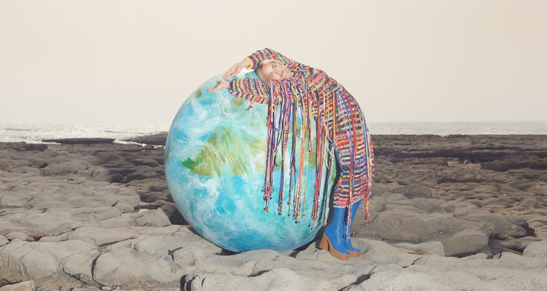

The Ethics of Fashion During Climate Change
The companies at the top of the fashion pyramid spent much of the fall previewing their luxury wares for spring 2020 and making their semiannual argument for the value of beauty, craftsmanship, and lots and lots of stuff. In their pursuit of the next new thing to entice consumers, editors and retailers left a giant carbon footprint as they jetted from New York to London, Milan to Paris. Sustainability was not always front of mind for many of them, but it was nonetheless there in the offhand comments about the inherent waste of runway show sets, the luxury market’s growing exasperation with fast fashion and the existential angst that fashion was little more than white noise in a cacophonous news cycle.
Amid the anxiety, a lot of the clothes presented on the runways and in showrooms were emblematic of ready-to-wear at its most creative and daring, as well as classics of the highest caliber. In Paris, Valentino designer Pierpaolo Piccioli deployed his exquisite eye for color to create Day-Glo gowns that exuded elegance and dresses with fauvist appliqué. At Alexander McQueen, creative director Sarah Burton made a conscious decision to focus on the crafts of dressmaking and tailoring, and to support the small, artisanal textile houses and mills throughout the United Kingdom. Her spring collection was full of intricate embroideries, hand-cut silk organza and crochet. And in New York, Mary-Kate Olsen and Ashley Olsen distilled fashion to its simplest form with a collection of trousers, coats and pristine shirts that ignore the ebb and flow of trends.
There’s something that recommends all these clothes: beauty, quality, utility. But in the world of everyday consumers, people are asking: Are there any clothes that are both guiltless and desirable? Is it possible to buy fashion that does not imperil the environment?
The sustainability puzzle is the problem that affects every corner of the fashion industry. Fashion’s global production chain pollutes the environment. Its factories, pushed to their limit, too often abuse an overwhelmingly female workforce. Because fashion’s fundamental operating principle rests on planned obsolescence, brands are in a ceaseless cycle of replacement and replenishment. Fashion’s job is to goad you into wanting, needing more.
None of this is lost on its practitioners. As the industry works to convince consumers that life will be that much better with another pair of special-edition sneakers or a hand-painted party dress, it’s also making sustainability part of its business models. The two largest luxury conglomerates, the Paris-based Kering Group and LVMH, have both made commitments to reduce their carbon footprints and their water consumption, better preserve raw materials and improve waste management. LVMH has invested in safeguarding the Amazon and in renewable energy. Kering has made a commitment to being carbon neutral across its supply chain. “When it comes to climate change, we can no longer wait to take real action,” said François-Henri Pinault, chairman and CEO of Kering, in a statement this fall. “While we focus on avoiding and reducing our [greenhouse gas] emissions to meet our Science-Based Target, we will offset all our remaining emissions and support the conservation of vital forests and biodiversity around the world.”
In New York, longtime environmental advocate Eileen Fisher has shared her expertise in circular design with the street style brand Public School. (Her company collaborated with Public School on a collection in 2018.) Designer Gabriela Hearst has shifted to biodegradable packaging and often uses fabric remnants from high-end textile mills in her production to reduce waste. “People say, ‘Oh you know we need to save the planet.’ No, no, no. Obviously you do not expose yourself to nature,” Hearst said to The Washington Post earlier this year. “You think you’re going to save the planet? Nature is a natural force. We are going to get exterminated.”
Consumers are also considering their culpability in the climate crisis. Ask a basic question about how to be a more deliberate shopper and you will quickly learn so few of them have clear-cut answers. Is it better to buy organic cotton or to buy cotton that’s grown locally? Organic is generally better. But doesn’t cotton production require an overabundance of water? Yes, but only because conventional cotton has been bred that way. Is fake fur a bigger burden on the environment than real fur? No, but you’ll still want to consider how that faux pelt is made. Just how bad is cashmere? Well, that’s complicated, but wool is arguably a better choice. What about carbon offsets? The math gets a little fuzzy. Because fashion’s fundamental operating principle rests on planned obsolescence, brands are in a ceaseless cycle of replacement and replenishment. Fashion’s job is to goad you into wanting, needing more.
The simplest answer to a shopper’s dilemma might be a paraphrase of the advice that food writer Michael Pollan offered to those of us perplexed by our mealtime choices: Buy clothes. Not too many. Mostly plant-based.
It is possible to buy something as simple as a white shirt, that wardrobe staple, whose production has a minimal impact on the environment and whose manufacture upholds fair labor practices — one that is also stylish.
In her recent book, “Fashionopolis: The Price of Fast Fashion and the Future of Clothes,” Dana Thomas explores the mess that the industry has made of the environment through its emphasis on disposable fashion and production chains that stretch halfway around the globe. A perfect white shirt, Thomas says in an interview, would be cut from organic cotton so that it could be composted without releasing toxins into the soil. It would have mother-of-pearl buttons, no plastic collar stays, and it would be roomy enough to be worn with its shirttails hanging but sleek enough to tuck into a pencil skirt.
Thomas, who is based in Paris, believes that she has found something very close to the perfect white shirt — one that she has worn in front of audiences as she has embarked on a book tour because she knew that the first question people would ask would be: What are you wearing?
She has favored a white cotton shirt from Stella McCartney, a brand that was built on the idea that luxury fashion can also be gentle on the environment and that eschews both fur and leather. Thomas’s shirt cost about $550.
She recognizes that most people can’t afford to spend hundreds of dollars on a white shirt, and that even those who can pay that much often refuse to do so. But shoppers should understand that sustainability is about more than just the cost of the raw materials used by a clothing company, says designer DooRi Chung, who teaches fashion design at Marist College in New York. “It’s about the supply chain,” Chung says, and that includes “how you treat your workers.”
If the fashion industry paid factory workers for the true value of their labor and was as mindful of its environmental footprint as it should be, Thomas says, then several hundred dollars is precisely what a highquality white shirt should cost. But instead of buying 10 shirts, customers should simply buy one.
This argument is not new, but Thomas underscores our outsize consumption habits by pointing to the fact that we have been enabled by clothing prices that have never been lower. The original Diane von Furstenberg wrap dress, which appeared on the cover of Newsweek in 1976 and was hailed as fashion salvation for working women, was priced at about $75. That translates to about $340 today — a dollar figure that would make a lot of women balk. But a shopper today doesn’t even have to spend that much on a wrap dress. She can buy a new one for only $248. At full price. In the 1950s, a man’s suit cost around $45. That’s the equivalent of about $430 today. A shopper can walk into H&M and buy a suit in the men’s department for a mere $105. Zara has them for $150. One from J. Crew totals $428. Again, that’s all at regular prices. And in a retail environment when every day there’s a discount, who pays full price anymore?
Since the post-World War II years, the price of clothing relative to the median household income has fallen while prices for housing, health care and cars have risen. Clothing prices, to be sure, are not the only items to become less expensive: Food prices have fallen significantly in the past 30 years, particularly the cost of beef, chicken and pork. Part of that drop is because the meat industry has become more industrialized and consolidated — and like the fashion industry, relies on cheap labor. Electronics have become dramatically more affordable as well. But unlike with clothes, few people have closets stuffed with iPhones.

The average consumer buys 60 percent more clothing today than 15 years ago, according to the “State of Fashion 2019” report by McKinsey & Co. and the trade publication the Business of Fashion. And so, instead of two adults comfortably fitting their entire wardrobe in one of those modest prewar closets, folks now require walk-in closets the size of studio apartments just to store a wardrobe of shoes. We are clothing gluttons. Even people who say they don’t care about fashion still have drawers overstuffed with T-shirts, jeans and hoodies. In fact, folks who shop for basics may be the worst offenders of all. Their castoffs aren’t going to consignment shops or vintage stores. They aren’t outlasting their first owner and being passed along as an heirloom. They’re going into landfills.
Each complicated answer eventually spirals down to consumption. The simplest, best path to sustainability is not anti-fashion; it’s anti-gorging. And yet, the same youthful consumers who came of age in the era of Instagram and who consider clothing old after only a couple of wearings are among the most attuned to environmental and social issues. They want guilt-free newness. That contradiction suggests that perhaps it’s best to search for that perfect white shirt in a consignment shop or through a digital resale merchant such as the RealReal. That would certainly reduce one’s personal environmental impact. Or maybe the ideal answer is to rent it. The success of the sharing economy certainly attests to people’s enthusiasm for this option. But renting clothes does little to wean us off the belief that newness is next to godliness. And as Thomas says, these rented garments must be constantly dry cleaned, packaged and shipped. While companies can employ green dry-cleaning processes and limit packaging, the clothes still have to travel miles upon miles from one renter to the next.
“It works better on a local scale rather than a global one because of the carbon footprint,” Thomas says. A small rental company can make its deliveries by foot or by bicycle. But then, would the cost to the customer tick up enough that it would make better economic sense to simply buy? And if we’re all furiously renting and consigning, aren’t we still enabling our gluttony? Maybe just buy less.
That’s what each complicated answer eventually spirals down to: consumption. The simplest, best path to sustainability is not anti-fashion; it’s anti-gorging.
The most sustainable white shirt may be cut from locally grown, organic cotton. It may tick all the boxes for fair labor practices and a minuscule carbon footprint. But the best white shirt — the perfect shirt — is the one that a shopper buys and wears for years. It’s the singular shirt that stands in lieu of a dozen cheap ones. It is the shirt that hangs, uncrowded, in a room the size of a closet.